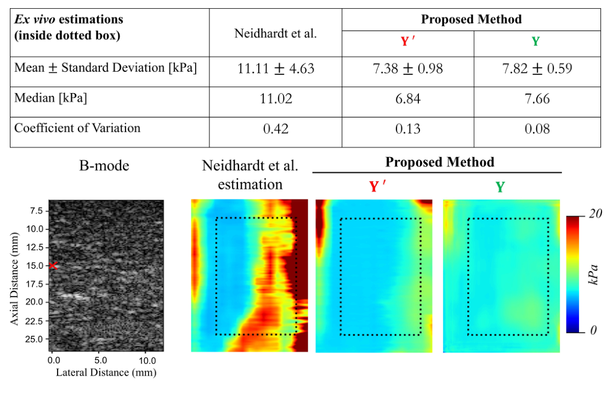
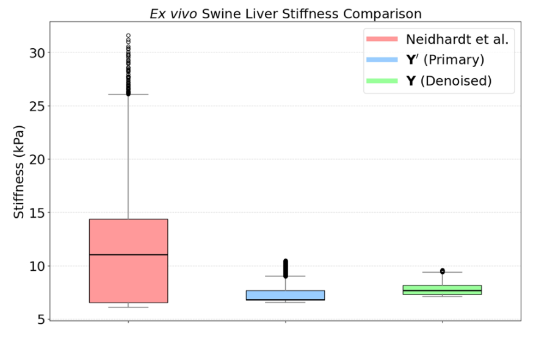

Why shear wave elastography needs a robust learned pipeline
Tissue stiffness separates pathology from healthy tissue: liver fibrosis sits above 8 kPa against under 6 kPa for normal liver, and malignant breast lesions at 33.3–80 kPa against 5–10 kPa for fatty tissue. Shear wave elastography (SWE) measures stiffness by pushing tissue with an acoustic radiation force (ARF) and tracking the resulting shear wave; Young’s modulus follows from the wave speed. In practice, reconstructions suffer from noise sensitivity, multi-push strategies that scale poorly to larger regions of interest, and too little annotated data, which leads to poor reconstructions and unreliable inclusion segmentation.
Sequential multi-push SWE covers a wider region by firing several ARF pushes one after another, each imaging its own overlapping sub-region. This work learns the full chain from that motion data to a clean stiffness map and a lesion mask.
Abstract
Objective: Ultrasound shear wave imaging enables noninvasive, quantitative assessment of tissue pathology with mechanical elasticity measurements. However, shear wave elastography (SWE) reconstructions are challenged by noise sensitivity, inefficient multi-push strategies for scalable ROI coverage, and limited annotated data, leading to suboptimal reconstruction and unreliable inclusion segmentation. Approach: We present a two-stage deep learning framework that addresses these limitations through a CNN-based Multi-Nested-LSTM reconstruction network followed by a compound-loss-driven CNN denoiser. The reconstruction stage begins with a ResNet3D encoder that extracts spatiotemporal features from sequential multi-push acoustic radiation force (ARF) data. These features are temporally windowed with Nested CNN-LSTM, converted from 3D to 2D with a temporal attention module (TAM), and enhanced by FFT-based frequency attention. The resulting 2D maps are decoded into primary 2D elasticity reconstructions. To mitigate data scarcity and improve generalization, a patch-based training regime is also proposed. The second stage introduces a dual-decoder denoising network that separately processes inclusion and background stiffness features, followed by a fusion module that produces a denoised modulus map and a segmentation mask. A multi-objective compound loss is designed to accommodate the denoising, fusing, and mask generation. Results: Tested on simulated and CIRS phantom datasets with four overlapping push regions, the method yields 26.33 dB PSNR, 30.73 dB CNR, and 0.813 IoU in simulation, and 22.44 dB PSNR, 36.88 dB CNR, and 0.781 IoU experimentally. Evaluation on an ex vivo swine liver confirmed elasticity estimates within reported biological stiffness ranges. Compared to DSWE-Net and spatio-temporal CNNs, our approach shows superior reconstruction, segmentation, and noise insensitivity. Significance: This framework provides a robust approach to SWE reconstruction and inclusion segmentation, demonstrating strong potential for clinical translation.
Two stages: reconstruct, then denoise and segment

Stage 1 · Reconstruction network
- ResNet3D encoder extracts spatiotemporal features from each region’s motion volume.
- Multi-Nested-LSTM blocks (six ConvLSTMs) window the temporal axis.
- A temporal attention module converts features from 3D to 2D, and FFT-based attention weights their frequency content.
- An SE-attention decoder outputs the 2D modulus map. Region outputs are merged with spatial windowing.
Stage 2 · Post-denoiser
- One encoder is shared by two decoders, one for the inclusion and one for the background.
- A fusion block merges both into the denoised map and predicts the inclusion mask.
- Compound loss: foreground and background regional terms, a fusion term (MAE + normalized cross-correlation), total variation, and IoU.
Simulation, phantom and ex vivo data
- Simulation (k-Wave + Field II): ARF-induced shear waves are simulated in k-Wave, imaged with Field II, and tracked with the Loupas algorithm, with white noise added to the RF data (25–35 dB SNR). 1,030 phantoms with circular or elliptical inclusions plus 50 with irregular shapes taken from BUSI breast-ultrasound masks. Inclusions 3–8 mm, 4–100 kPa, in a 4–48 kPa background; R = 4 pushes per ROI. Train/validation/test splits (852/114/114) have non-overlapping inclusion stiffness values.
- CIRS 049 phantoms: 72 private SWE acquisitions across four phantoms and four inclusion types (6–76 kPa in an 18–24 kPa background), each imaged with four overlapping push regions.
- Ex vivo swine liver: a fresh Yucatan miniature swine liver imaged with a Verasonics Vantage 128 and an L7-4 array; a single ARF push, 200 frames at 10 kHz.

Reconstruction quality
Compared against DSWE-Net and the spatio-temporal CNN of Neidhardt et al. Y is the denoised output of the full pipeline.
Inclusion segmentation
Neidhardt et al. do not produce masks, so segmentation is compared with masks derived from DSWE-Net.
| Data | Method | IoU ↑ | F1 ↑ | HD ↓ | ASSD ↓ |
|---|---|---|---|---|---|
| Simulation | DSWE-Net (masks) | 0.629 | 0.861 | 7.53 | 1.39 |
| Ours (M) | 0.813 | 0.892 | 6.18 | 1.18 | |
| CIRS 049 | DSWE-Net (masks) | 0.667 | 0.350 | 90.86 | 76.95 |
| Ours (M) | 0.781 | 0.873 | 6.40 | 0.86 |
Masks M come straight from the denoiser’s sigmoid output. CIRS 049 labels were hand-drawn from B-mode images, where some boundaries are indistinct, which lowers IoU for every method.
Swine liver
On a fresh swine liver (single push, not seen in training), stiffness was measured inside a 16.4 mm × 8.1 mm box to the right of the push. Reported values for ex vivo swine liver range from 8.23 ± 2.38 to 9.13 ± 2.13 kPa. The denoised output Y gives 7.82 ± 0.59 kPa with the lowest spread; Neidhardt et al. overestimate, driven by noise more than 8 mm from the push, where shear waves attenuate in viscoelastic liver. DSWE-Net did not produce a usable result.
| Estimate (inside box) | Mean ± SD [kPa] | Median [kPa] | CV ↓ |
|---|---|---|---|
| Neidhardt et al. | 11.11 ± 4.63 | 11.02 | 0.42 |
| Ours, primary (Y′) | 7.38 ± 0.98 | 6.84 | 0.13 |
| Ours, denoised (Y) | 7.82 ± 0.59 | 7.66 | 0.08 |


Reconstructions

What each part contributes
On simulation data, six nested ConvLSTMs beat a single one, and adding the temporal attention module and FFT attention gives the best primary reconstruction. In the denoiser, the NCC fusion term (β2) and a moderate total-variation weight (γ = 10) both help; a heavier TV weight blurs the inclusion boundary.
| Variant | MAE ↓FG · kPa | MAE ↓BG · kPa | CNR ↑dB | PSNR ↑dB | SSIM ↑ |
|---|
κ: fusion weight; β2: NCC weight; γ: TV weight. Best value per block is highlighted.
BibTeX
@article{alam2026robust,
title = {Robust CNN Multi-Nested-LSTM Framework with Compound Loss for
Patch-based Multi-Push Ultrasound Shear Wave Imaging and Segmentation},
author = {Alam, MD Jahin and Akash, Ahsan Habib and Bell, Muyinatu A. Lediju and
Hasan, Md. Kamrul},
journal = {Physics in Medicine \& Biology},
year = {2026}
}